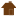
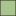

<!doctype html>
<html lang="en">
    <head>
        <meta charset="utf-8">
        <meta http-equiv="X-UA-Compatible" content="IE=edge">
        <meta name="viewport" content="initial-scale=1,user-scalable=no,maximum-scale=1,width=device-width">
        <meta name="mobile-web-app-capable" content="yes">
        <meta name="apple-mobile-web-app-capable" content="yes">
        <link rel="stylesheet" href="css/leaflet.css">
        <link rel="stylesheet" href="css/L.Control.Layers.Tree.css">
        <link rel="stylesheet" href="css/qgis2web.css">
        <link rel="stylesheet" href="css/fontawesome-all.min.css">
        <link rel="stylesheet" href="css/leaflet-search.css">
        <link rel="stylesheet" href="css/leaflet-measure.css">
        <style>
        #map {
            width: 1620px;
            height: 883px;
        }
        </style>
        <title>Parcs Nationaux - Pyrénées</title>
    </head>
    <body>
        <div id="map">
        </div>
        <script src="js/qgis2web_expressions.js"></script>
        <script src="js/leaflet.js"></script>
        <script src="js/L.Control.Layers.Tree.min.js"></script>
        <script src="js/leaflet.rotatedMarker.js"></script>
        <script src="js/leaflet.pattern.js"></script>
        <script src="js/leaflet-hash.js"></script>
        <script src="js/Autolinker.min.js"></script>
        <script src="js/rbush.min.js"></script>
        <script src="js/labelgun.min.js"></script>
        <script src="js/labels.js"></script>
        <script src="js/leaflet-measure.js"></script>
        <script src="js/leaflet-search.js"></script>
        <script src="data/PNP_zone_optimale_adhesion_1.js"></script>
        <script src="data/PNP_zone_adhesion_2.js"></script>
        <script src="data/PNP_zone_coeur_3.js"></script>
        <script src="data/PNP_plans_eau_4.js"></script>
        <script src="data/PNP_secteurs_5.js"></script>
        <script src="data/PNP_sentiers_6.js"></script>
        <script src="data/PNP_refuges_7.js"></script>
        <script src="data/PNP_maisons_du_parc_8.js"></script>
        <script src="data/PNP_limites_parc_toutes_zones_9.js"></script>
        <script>
        var map = L.map('map', {
            zoomControl:false, maxZoom:28, minZoom:1
        }).fitBounds([[42.685739886631374,-0.8288296333903654],[43.27170104624327,0.5669533907739982]]);
        var hash = new L.Hash(map);
        map.attributionControl.setPrefix('<a href="https://github.com/tomchadwin/qgis2web" target="_blank">qgis2web</a> &middot; <a href="https://leafletjs.com" title="A JS library for interactive maps">Leaflet</a> &middot; <a href="https://qgis.org">QGIS</a>');
        var autolinker = new Autolinker({truncate: {length: 30, location: 'smart'}});
        // remove popup's row if "visible-with-data"
        function removeEmptyRowsFromPopupContent(content, feature) {
         var tempDiv = document.createElement('div');
         tempDiv.innerHTML = content;
         var rows = tempDiv.querySelectorAll('tr');
         for (var i = 0; i < rows.length; i++) {
             var td = rows[i].querySelector('td.visible-with-data');
             var key = td ? td.id : '';
             if (td && td.classList.contains('visible-with-data') && feature.properties[key] == null) {
                 rows[i].parentNode.removeChild(rows[i]);
             }
         }
         return tempDiv.innerHTML;
        }
        // add class to format popup if it contains media
		function addClassToPopupIfMedia(content, popup) {
			var tempDiv = document.createElement('div');
			tempDiv.innerHTML = content;
			if (tempDiv.querySelector('td img')) {
				popup._contentNode.classList.add('media');
					// Delay to force the redraw
					setTimeout(function() {
						popup.update();
					}, 10);
			} else {
				popup._contentNode.classList.remove('media');
			}
		}
        var title = new L.Control({'position':'topright'});
        title.onAdd = function (map) {
            this._div = L.DomUtil.create('div', 'info');
            this.update();
            return this._div;
        };
        title.update = function () {
            this._div.innerHTML = '<h2>Parcs Nationaux - Pyrénées</h2>';
        };
        title.addTo(map);
        var zoomControl = L.control.zoom({
            position: 'topleft'
        }).addTo(map);
        var measureControl = new L.Control.Measure({
            position: 'topleft',
            primaryLengthUnit: 'meters',
            secondaryLengthUnit: 'kilometers',
            primaryAreaUnit: 'sqmeters',
            secondaryAreaUnit: 'hectares'
        });
        measureControl.addTo(map);
        document.getElementsByClassName('leaflet-control-measure-toggle')[0].innerHTML = '';
        document.getElementsByClassName('leaflet-control-measure-toggle')[0].className += ' fas fa-ruler';
        var bounds_group = new L.featureGroup([]);
        function setBounds() {
        }
        map.createPane('pane__GoogleSatellite_0');
        map.getPane('pane__GoogleSatellite_0').style.zIndex = 400;
        var layer__GoogleSatellite_0 = L.tileLayer('http://mt0.google.com/vt/lyrs=s&hl=en&x={x}&y={y}&z={z}', {
            pane: 'pane__GoogleSatellite_0',
            opacity: 1.0,
            attribution: '',
            minZoom: 1,
            maxZoom: 28,
            minNativeZoom: 0,
            maxNativeZoom: 18
        });
        layer__GoogleSatellite_0;
        map.addLayer(layer__GoogleSatellite_0);
        function pop_PNP_zone_optimale_adhesion_1(feature, layer) {
            var popupContent = '<table>\
                    <tr>\
                        <td colspan="2">' + (feature.properties['ID'] !== null ? autolinker.link(feature.properties['ID'].toLocaleString()) : '') + '</td>\
                    </tr>\
                    <tr>\
                        <td colspan="2">' + (feature.properties['Libellé'] !== null ? autolinker.link(feature.properties['Libellé'].toLocaleString()) : '') + '</td>\
                    </tr>\
                </table>';
            var content = removeEmptyRowsFromPopupContent(popupContent, feature);
			layer.on('popupopen', function(e) {
				addClassToPopupIfMedia(content, e.popup);
			});
			layer.bindPopup(content, { maxHeight: 400 });
        }

        function style_PNP_zone_optimale_adhesion_1_0() {
            return {
                pane: 'pane_PNP_zone_optimale_adhesion_1',
                opacity: 1,
                color: 'rgba(35,35,35,0.68)',
                dashArray: '',
                lineCap: 'butt',
                lineJoin: 'miter',
                weight: 1.0, 
                fill: true,
                fillOpacity: 1,
                fillColor: 'rgba(170,196,141,0.68)',
                interactive: true,
            }
        }
        map.createPane('pane_PNP_zone_optimale_adhesion_1');
        map.getPane('pane_PNP_zone_optimale_adhesion_1').style.zIndex = 401;
        map.getPane('pane_PNP_zone_optimale_adhesion_1').style['mix-blend-mode'] = 'normal';
        var layer_PNP_zone_optimale_adhesion_1 = new L.geoJson(json_PNP_zone_optimale_adhesion_1, {
            attribution: '',
            interactive: true,
            dataVar: 'json_PNP_zone_optimale_adhesion_1',
            layerName: 'layer_PNP_zone_optimale_adhesion_1',
            pane: 'pane_PNP_zone_optimale_adhesion_1',
            onEachFeature: pop_PNP_zone_optimale_adhesion_1,
            style: style_PNP_zone_optimale_adhesion_1_0,
        });
        bounds_group.addLayer(layer_PNP_zone_optimale_adhesion_1);
        map.addLayer(layer_PNP_zone_optimale_adhesion_1);
        function pop_PNP_zone_adhesion_2(feature, layer) {
            var popupContent = '<table>\
                    <tr>\
                        <td colspan="2">' + (feature.properties['id'] !== null ? autolinker.link(feature.properties['id'].toLocaleString()) : '') + '</td>\
                    </tr>\
                    <tr>\
                        <td colspan="2">' + (feature.properties['nom'] !== null ? autolinker.link(feature.properties['nom'].toLocaleString()) : '') + '</td>\
                    </tr>\
                </table>';
            var content = removeEmptyRowsFromPopupContent(popupContent, feature);
			layer.on('popupopen', function(e) {
				addClassToPopupIfMedia(content, e.popup);
			});
			layer.bindPopup(content, { maxHeight: 400 });
        }

        function style_PNP_zone_adhesion_2_0() {
            return {
                pane: 'pane_PNP_zone_adhesion_2',
                opacity: 1,
                color: 'rgba(35,35,35,0.58)',
                dashArray: '',
                lineCap: 'butt',
                lineJoin: 'miter',
                weight: 1.0, 
                fill: true,
                fillOpacity: 1,
                fillColor: 'rgba(7,82,27,0.58)',
                interactive: true,
            }
        }
        map.createPane('pane_PNP_zone_adhesion_2');
        map.getPane('pane_PNP_zone_adhesion_2').style.zIndex = 402;
        map.getPane('pane_PNP_zone_adhesion_2').style['mix-blend-mode'] = 'normal';
        var layer_PNP_zone_adhesion_2 = new L.geoJson(json_PNP_zone_adhesion_2, {
            attribution: '',
            interactive: true,
            dataVar: 'json_PNP_zone_adhesion_2',
            layerName: 'layer_PNP_zone_adhesion_2',
            pane: 'pane_PNP_zone_adhesion_2',
            onEachFeature: pop_PNP_zone_adhesion_2,
            style: style_PNP_zone_adhesion_2_0,
        });
        bounds_group.addLayer(layer_PNP_zone_adhesion_2);
        map.addLayer(layer_PNP_zone_adhesion_2);
        function pop_PNP_zone_coeur_3(feature, layer) {
            var popupContent = '<table>\
                    <tr>\
                        <td colspan="2">' + (feature.properties['id'] !== null ? autolinker.link(feature.properties['id'].toLocaleString()) : '') + '</td>\
                    </tr>\
                    <tr>\
                        <td colspan="2">' + (feature.properties['nom'] !== null ? autolinker.link(feature.properties['nom'].toLocaleString()) : '') + '</td>\
                    </tr>\
                </table>';
            var content = removeEmptyRowsFromPopupContent(popupContent, feature);
			layer.on('popupopen', function(e) {
				addClassToPopupIfMedia(content, e.popup);
			});
			layer.bindPopup(content, { maxHeight: 400 });
        }

        function style_PNP_zone_coeur_3_0() {
            return {
                pane: 'pane_PNP_zone_coeur_3',
                opacity: 1,
                color: 'rgba(255,194,72,0.78)',
                dashArray: '',
                lineCap: 'butt',
                lineJoin: 'miter',
                weight: 1.0, 
                fill: true,
                fillOpacity: 1,
                fillColor: 'rgba(255,230,179,0.78)',
                interactive: true,
            }
        }
        map.createPane('pane_PNP_zone_coeur_3');
        map.getPane('pane_PNP_zone_coeur_3').style.zIndex = 403;
        map.getPane('pane_PNP_zone_coeur_3').style['mix-blend-mode'] = 'normal';
        var layer_PNP_zone_coeur_3 = new L.geoJson(json_PNP_zone_coeur_3, {
            attribution: '',
            interactive: true,
            dataVar: 'json_PNP_zone_coeur_3',
            layerName: 'layer_PNP_zone_coeur_3',
            pane: 'pane_PNP_zone_coeur_3',
            onEachFeature: pop_PNP_zone_coeur_3,
            style: style_PNP_zone_coeur_3_0,
        });
        bounds_group.addLayer(layer_PNP_zone_coeur_3);
        map.addLayer(layer_PNP_zone_coeur_3);
        function pop_PNP_plans_eau_4(feature, layer) {
            var popupContent = '<table>\
                    <tr>\
                        <td colspan="2">' + (feature.properties['ID'] !== null ? autolinker.link(feature.properties['ID'].toLocaleString()) : '') + '</td>\
                    </tr>\
                    <tr>\
                        <td colspan="2">' + (feature.properties['NATURE'] !== null ? autolinker.link(feature.properties['NATURE'].toLocaleString()) : '') + '</td>\
                    </tr>\
                    <tr>\
                        <td colspan="2">' + (feature.properties['TOPONYME'] !== null ? autolinker.link(feature.properties['TOPONYME'].toLocaleString()) : '') + '</td>\
                    </tr>\
                    <tr>\
                        <td colspan="2">' + (feature.properties['SUPERFICIE'] !== null ? autolinker.link(feature.properties['SUPERFICIE'].toLocaleString()) : '') + '</td>\
                    </tr>\
                    <tr>\
                        <td colspan="2">' + (feature.properties['area_ha'] !== null ? autolinker.link(feature.properties['area_ha'].toLocaleString()) : '') + '</td>\
                    </tr>\
                </table>';
            var content = removeEmptyRowsFromPopupContent(popupContent, feature);
			layer.on('popupopen', function(e) {
				addClassToPopupIfMedia(content, e.popup);
			});
			layer.bindPopup(content, { maxHeight: 400 });
        }

        function style_PNP_plans_eau_4_0() {
            return {
                pane: 'pane_PNP_plans_eau_4',
                opacity: 1,
                color: 'rgba(80,140,183,1.0)',
                dashArray: '',
                lineCap: 'butt',
                lineJoin: 'miter',
                weight: 1.0, 
                fill: true,
                fillOpacity: 1,
                fillColor: 'rgba(112,195,255,1.0)',
                interactive: true,
            }
        }
        map.createPane('pane_PNP_plans_eau_4');
        map.getPane('pane_PNP_plans_eau_4').style.zIndex = 404;
        map.getPane('pane_PNP_plans_eau_4').style['mix-blend-mode'] = 'normal';
        var layer_PNP_plans_eau_4 = new L.geoJson(json_PNP_plans_eau_4, {
            attribution: '',
            interactive: true,
            dataVar: 'json_PNP_plans_eau_4',
            layerName: 'layer_PNP_plans_eau_4',
            pane: 'pane_PNP_plans_eau_4',
            onEachFeature: pop_PNP_plans_eau_4,
            style: style_PNP_plans_eau_4_0,
        });
        bounds_group.addLayer(layer_PNP_plans_eau_4);
        map.addLayer(layer_PNP_plans_eau_4);
        function pop_PNP_secteurs_5(feature, layer) {
            var popupContent = '<table>\
                    <tr>\
                        <td colspan="2">' + (feature.properties['ID'] !== null ? autolinker.link(feature.properties['ID'].toLocaleString()) : '') + '</td>\
                    </tr>\
                    <tr>\
                        <td colspan="2">' + (feature.properties['Nom'] !== null ? autolinker.link(feature.properties['Nom'].toLocaleString()) : '') + '</td>\
                    </tr>\
                </table>';
            var content = removeEmptyRowsFromPopupContent(popupContent, feature);
			layer.on('popupopen', function(e) {
				addClassToPopupIfMedia(content, e.popup);
			});
			layer.bindPopup(content, { maxHeight: 400 });
        }

        function style_PNP_secteurs_5_0() {
            return {
                pane: 'pane_PNP_secteurs_5',
                opacity: 1,
                color: 'rgba(255,197,35,1.0)',
                dashArray: '',
                lineCap: 'butt',
                lineJoin: 'miter',
                weight: 1.0, 
                fill: true,
                fillOpacity: 1,
                fillColor: 'rgba(232,232,232,0.0)',
                interactive: true,
            }
        }
        map.createPane('pane_PNP_secteurs_5');
        map.getPane('pane_PNP_secteurs_5').style.zIndex = 405;
        map.getPane('pane_PNP_secteurs_5').style['mix-blend-mode'] = 'normal';
        var layer_PNP_secteurs_5 = new L.geoJson(json_PNP_secteurs_5, {
            attribution: '',
            interactive: true,
            dataVar: 'json_PNP_secteurs_5',
            layerName: 'layer_PNP_secteurs_5',
            pane: 'pane_PNP_secteurs_5',
            onEachFeature: pop_PNP_secteurs_5,
            style: style_PNP_secteurs_5_0,
        });
        bounds_group.addLayer(layer_PNP_secteurs_5);
        map.addLayer(layer_PNP_secteurs_5);
        function pop_PNP_sentiers_6(feature, layer) {
            var popupContent = '<table>\
                    <tr>\
                        <td colspan="2">' + (feature.properties['IDPNP'] !== null ? autolinker.link(feature.properties['IDPNP'].toLocaleString()) : '') + '</td>\
                    </tr>\
                </table>';
            var content = removeEmptyRowsFromPopupContent(popupContent, feature);
			layer.on('popupopen', function(e) {
				addClassToPopupIfMedia(content, e.popup);
			});
			layer.bindPopup(content, { maxHeight: 400 });
        }

        function style_PNP_sentiers_6_0() {
            return {
                pane: 'pane_PNP_sentiers_6',
                opacity: 1,
                color: 'rgba(234,255,191,1.0)',
                dashArray: '',
                lineCap: 'square',
                lineJoin: 'bevel',
                weight: 1.0,
                fillOpacity: 0,
                interactive: true,
            }
        }
        map.createPane('pane_PNP_sentiers_6');
        map.getPane('pane_PNP_sentiers_6').style.zIndex = 406;
        map.getPane('pane_PNP_sentiers_6').style['mix-blend-mode'] = 'normal';
        var layer_PNP_sentiers_6 = new L.geoJson(json_PNP_sentiers_6, {
            attribution: '',
            interactive: true,
            dataVar: 'json_PNP_sentiers_6',
            layerName: 'layer_PNP_sentiers_6',
            pane: 'pane_PNP_sentiers_6',
            onEachFeature: pop_PNP_sentiers_6,
            style: style_PNP_sentiers_6_0,
        });
        bounds_group.addLayer(layer_PNP_sentiers_6);
        map.addLayer(layer_PNP_sentiers_6);
        function pop_PNP_refuges_7(feature, layer) {
            var popupContent = '<table>\
                    <tr>\
                        <td colspan="2">' + (feature.properties['Type'] !== null ? autolinker.link(feature.properties['Type'].toLocaleString()) : '') + '</td>\
                    </tr>\
                    <tr>\
                        <td colspan="2">' + (feature.properties['Propriete'] !== null ? autolinker.link(feature.properties['Propriete'].toLocaleString()) : '') + '</td>\
                    </tr>\
                    <tr>\
                        <td colspan="2">' + (feature.properties['Nom'] !== null ? autolinker.link(feature.properties['Nom'].toLocaleString()) : '') + '</td>\
                    </tr>\
                </table>';
            var content = removeEmptyRowsFromPopupContent(popupContent, feature);
			layer.on('popupopen', function(e) {
				addClassToPopupIfMedia(content, e.popup);
			});
			layer.bindPopup(content, { maxHeight: 400 });
        }

        function style_PNP_refuges_7_0() {
            return {
                pane: 'pane_PNP_refuges_7',
        rotationAngle: 0.0,
        rotationOrigin: 'center center',
        icon: L.icon({
            iconUrl: 'markers/PNP_refuges_7.svg',
            iconSize: [19.0, 19.0]
        }),
                interactive: true,
            }
        }
        map.createPane('pane_PNP_refuges_7');
        map.getPane('pane_PNP_refuges_7').style.zIndex = 407;
        map.getPane('pane_PNP_refuges_7').style['mix-blend-mode'] = 'normal';
        var layer_PNP_refuges_7 = new L.geoJson(json_PNP_refuges_7, {
            attribution: '',
            interactive: true,
            dataVar: 'json_PNP_refuges_7',
            layerName: 'layer_PNP_refuges_7',
            pane: 'pane_PNP_refuges_7',
            onEachFeature: pop_PNP_refuges_7,
            pointToLayer: function (feature, latlng) {
                var context = {
                    feature: feature,
                    variables: {}
                };
                return L.marker(latlng, style_PNP_refuges_7_0(feature));
            },
        });
        bounds_group.addLayer(layer_PNP_refuges_7);
        map.addLayer(layer_PNP_refuges_7);
        function pop_PNP_maisons_du_parc_8(feature, layer) {
            var popupContent = '<table>\
                    <tr>\
                        <td colspan="2">' + (feature.properties['Nom'] !== null ? autolinker.link(feature.properties['Nom'].toLocaleString()) : '') + '</td>\
                    </tr>\
                </table>';
            var content = removeEmptyRowsFromPopupContent(popupContent, feature);
			layer.on('popupopen', function(e) {
				addClassToPopupIfMedia(content, e.popup);
			});
			layer.bindPopup(content, { maxHeight: 400 });
        }

        function style_PNP_maisons_du_parc_8_0() {
            return {
                pane: 'pane_PNP_maisons_du_parc_8',
        rotationAngle: 0.0,
        rotationOrigin: 'center center',
        icon: L.icon({
            iconUrl: 'markers/PNP_maisons_du_parc_8.svg',
            iconSize: [19.0, 19.0]
        }),
                interactive: true,
            }
        }
        map.createPane('pane_PNP_maisons_du_parc_8');
        map.getPane('pane_PNP_maisons_du_parc_8').style.zIndex = 408;
        map.getPane('pane_PNP_maisons_du_parc_8').style['mix-blend-mode'] = 'normal';
        var layer_PNP_maisons_du_parc_8 = new L.geoJson(json_PNP_maisons_du_parc_8, {
            attribution: '',
            interactive: true,
            dataVar: 'json_PNP_maisons_du_parc_8',
            layerName: 'layer_PNP_maisons_du_parc_8',
            pane: 'pane_PNP_maisons_du_parc_8',
            onEachFeature: pop_PNP_maisons_du_parc_8,
            pointToLayer: function (feature, latlng) {
                var context = {
                    feature: feature,
                    variables: {}
                };
                return L.marker(latlng, style_PNP_maisons_du_parc_8_0(feature));
            },
        });
        bounds_group.addLayer(layer_PNP_maisons_du_parc_8);
        map.addLayer(layer_PNP_maisons_du_parc_8);
        function pop_PNP_limites_parc_toutes_zones_9(feature, layer) {
            var popupContent = '<table>\
                    <tr>\
                        <td colspan="2">' + (feature.properties['id'] !== null ? autolinker.link(feature.properties['id'].toLocaleString()) : '') + '</td>\
                    </tr>\
                    <tr>\
                        <td class="visible-with-data" id="nom"colspan="2"><strong>nom</strong><br />' + (feature.properties['nom'] !== null ? autolinker.link(feature.properties['nom'].toLocaleString()) : '') + '</td>\
                    </tr>\
                </table>';
            var content = removeEmptyRowsFromPopupContent(popupContent, feature);
			layer.on('popupopen', function(e) {
				addClassToPopupIfMedia(content, e.popup);
			});
			layer.bindPopup(content, { maxHeight: 400 });
        }

        function style_PNP_limites_parc_toutes_zones_9_0() {
            return {
                pane: 'pane_PNP_limites_parc_toutes_zones_9',
                opacity: 1,
                color: 'rgba(255,255,255,1.0)',
                dashArray: '',
                lineCap: 'square',
                lineJoin: 'bevel',
                weight: 2.0,
                fillOpacity: 0,
                interactive: true,
            }
        }
        map.createPane('pane_PNP_limites_parc_toutes_zones_9');
        map.getPane('pane_PNP_limites_parc_toutes_zones_9').style.zIndex = 409;
        map.getPane('pane_PNP_limites_parc_toutes_zones_9').style['mix-blend-mode'] = 'normal';
        var layer_PNP_limites_parc_toutes_zones_9 = new L.geoJson(json_PNP_limites_parc_toutes_zones_9, {
            attribution: '',
            interactive: true,
            dataVar: 'json_PNP_limites_parc_toutes_zones_9',
            layerName: 'layer_PNP_limites_parc_toutes_zones_9',
            pane: 'pane_PNP_limites_parc_toutes_zones_9',
            onEachFeature: pop_PNP_limites_parc_toutes_zones_9,
            style: style_PNP_limites_parc_toutes_zones_9_0,
        });
        bounds_group.addLayer(layer_PNP_limites_parc_toutes_zones_9);
        map.addLayer(layer_PNP_limites_parc_toutes_zones_9);
        var overlaysTree = [
            {label: ' PNP_limites_parc_toutes_zones', layer: layer_PNP_limites_parc_toutes_zones_9},
            {label: ' PNP_maisons_du_parc', layer: layer_PNP_maisons_du_parc_8},
            {label: ' PNP_refuges', layer: layer_PNP_refuges_7},
            {label: ' PNP_sentiers', layer: layer_PNP_sentiers_6},
            {label: ' PNP_secteurs', layer: layer_PNP_secteurs_5},
            {label: ' PNP_plans_eau', layer: layer_PNP_plans_eau_4},
            {label: ' PNP_zone_coeur', layer: layer_PNP_zone_coeur_3},
            {label: ' PNP_zone_adhesion', layer: layer_PNP_zone_adhesion_2},
            {label: ' PNP_zone_optimale_adhesion', layer: layer_PNP_zone_optimale_adhesion_1},
            {label: "_Google Satellite", layer: layer__GoogleSatellite_0},]
        var lay = L.control.layers.tree(null, overlaysTree,{
            //namedToggle: true,
            //selectorBack: false,
            //closedSymbol: '&#8862; &#x1f5c0;',
            //openedSymbol: '&#8863; &#x1f5c1;',
            //collapseAll: 'Collapse all',
            //expandAll: 'Expand all',
            collapsed: true,
        });
        lay.addTo(map);
        setBounds();
        map.addControl(new L.Control.Search({
            layer: layer_PNP_refuges_7,
            initial: false,
            hideMarkerOnCollapse: true,
            propertyName: 'Nom'}));
        document.getElementsByClassName('search-button')[0].className +=
         ' fa fa-binoculars';
        resetLabels([layer_PNP_secteurs_5]);
        map.on("zoomend", function(){
            resetLabels([layer_PNP_secteurs_5]);
        });
        map.on("layeradd", function(){
            resetLabels([layer_PNP_secteurs_5]);
        });
        map.on("layerremove", function(){
            resetLabels([layer_PNP_secteurs_5]);
        });
        </script>
    </body>
</html>
